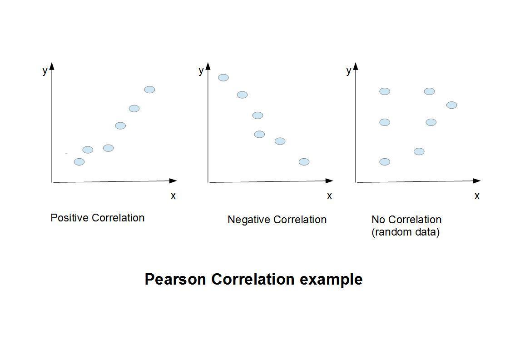

Machine Learning with an Amazon like Recommendation Engine

Beginners Start Here:
Create a Word Counter in Python
An introduction to Numpy and Matplotlib
Introduction to Pandas with Practical Examples (New)
Main Book
Image and Video Processing in Python
Audio and Digital Signal Processing (DSP)
Machine Learning Section
Machine Learning with an Amazon like Recommendation Engine
If you have been to Amazon, you must have seen the “also bought” section, which recommends which other movies / books you will like, based on the movies your currently bought/rated.
Amazon is a special case of this, as it hires hundreds of engineers whose job is to tweak this algorithm. And it works great for things like books. I have bought many great books based on Amazon’s recommendation. It works for movies as well. Where it fails is for items that are not usually rated/reviewed, at least as much as books/movies. Things like household products. I recently bought a drain cleaner, and was immediately bombarded with toilet cleaning products, even though the cleaner had been a one time buy.
That said, their algorithm works well in the general case, and is the main reason Amazon has become such a powerhouse. Amazon always recommends the items it thinks you will like. If you think that is a big deal, try going to Amazon’s rivals for books, like B&N, Apple or Kobo. They always have the same 4-5 books they always recommend, a list that is updated once a month, and usually represents books by big publishers who have paid top dollar to be featured.
Like I said, Amazon’s algorithm is highly tweaked (and secret), and is based on years of experience. While we can’t replicate what they did, we can understand the theory of how the algorithm works.
At its heart, the algorithm looks at items you have rated, and tries to find people who rated the same items in the same way as you. It then checks which other books/movies they liked that you haven’t bought yet, and recommends it to you.
So if you constantly rate action movies as high, the algorithm will show you other highly recommended action movies. But what if you like both action and scifi? Based on my experience, you will get recommendations for both.
So how does the algorithm know which movies to recommend? In technical terms, it looks which movies are most co-related to the ones you rated.
Pearson Correlation
The Pearson Correlation coefficient measures how strongly related two items are, ie, will increasing one increase the other as well? The easiest way to understand this is via a diagram.

The first image is of positive correlation- the values are moving up in step. The second is an example of negative correlation, ie, increasing one will decrease the other. That means they are inversely related. The third is random data- it shows no correlation. This is actually the most common case, as not everything has correlation to everything else (unless you believe in weird psychic phenomena).
How does this work in practice? Simple. Again, numpy already has functions for Pearson correlation. All you need to do is call them with different inputs.
In fact, numpy has two functions for the Pearson coefficient. One is really slow, and one is fast. I don’t know why they have two functions, must be a historical thing. I will only use the faster function. Let me give you a few quick examples on how it works.
a = [1, 2, 3, 4, 5]
b = [1, 3, 9, 20, 22]
np.corrcoef(a,b)[1][0]
Out[8]: 0.969954025101608
np.corrcoef() is the function we are using. It returns a value from -1 to 1. -1 is strong negative correlation, while +1 is strong positive correlation. 0 means no correlation. You may also note that it returns an array, and I’m reading the _[1][0]_th value. That is because this function can be used to compare multiple arrays, and so it returns a matrix of correlated values. For our case with only two arrays, we just need one of the values returned, and we read this one.
I declare two arrays, a and b. Notice that both contain increasing numbers. When I call the np.corrcoef() function on them, I get a value of 0.9, very high correlation.
Now let’s try a more random input:
a = [1, 2, 3, 4, 5]
c = [2 , 7, 9, 1, 0]
np.corrcoef(a,c)[1][0]
Out[9]: -0.39904344223381105
This time I get -0.3, which makes sense, as there is no correlation between random data.
This will become more clear as we look at the example.
Dive into the code
Okay, now that we know the theory, let’s dive into the code.
I have generated some random data for a few movie ratings. Let’s have a look at it (ml_data1.py):
{'Terminator': {'Tom': 4.0,
'Jack': 1.5,
'Lisa': 3.0,
'Sally': 2.0},
'Terminator 2': {'Tom': 5.0,
'Jack' : 1.0,
'Lisa': 3.5,
'Sally': 2.0},
'It happened one night': {'Tom': 3.5,
'Jack': 3.5,
'Tiger': 4.0,
'Lisa': 5.0,
'Michele': 3.0,
'Sally': 4.0,},
'27 Dresses': {'Tom': 3.0,
'Jack': 3.5,
'Tiger': 3.0,
'Lisa': 5.0,
'Michele': 4.0,
'Sally': 4.0},
'Poirot': {'Tom': 4.0,
'Jack': 3.0,
'Tiger': 5.0,
'Lisa': 4.0,
'Michele': 3.5,
'Sally': 3.0,
},
'Sherlock Holmes': {'Tom': 4.0,
'Jack': 3.0,
'Tiger': 3.5,
'Lisa': 3.5,
'Sally': 2.0,
}}
The movie data is stored as a dictionary. Each dictionary has its own sub-dictionary. Let’s have a look at the first movie:
'Terminator': {'Tom': 4.0,
'Jack': 1.5,
'Lisa': 3.0,
'Sally': 2.0},
The movie Terminator has been rated by four people: Tom has given it a score of 4.0, while Jack has given it 1.5, and so on. These numbers are random (ie, I just made them up).
You will notice that not all people have rated all the movies. This is something we will need to take into account when we are calculating the correlation.
Let’s open up the file calc_correlation.py Ignore the function for now, let’s see the main code:
if len(sys.argv) < 2:
print("Usage: python calc_correlation.py <data file.py>")
exit(1)
We want to give the script a data file to calculate the correlation on, in this case, ml_data1.py, the file we looked at before. If the file is not given, we print the usage and exit.
with open(sys.argv[1], 'r') as f:
temp = f.read()
movies_list = ast.literal_eval(temp)
print(movies_list)
If you have never used the with function in Python, it’s a cool fairly new feature. Normally, when you open a file, you have to close it, deal with any errors etc. with does all that for you. It will open the file, close it at the end, and handle any errors that may arise.
Looking at the code line by line.
with open(sys.argv[1], 'r') as f:
We open the file passed as first argument as read only.
temp = f.read()
movies_list = ast.literal_eval(temp)
The first thing we do is read the file into a temp variable. The next line may require some explanation.
A nifty feature in Python is the eval() function. It allows you to generate Python code in real time and run it. Obviously, this is very dangerous, as you don’t know what you are reading. Someone may put in code to delete all your files. For this reason, eval is almost never used in practice.
The literal_eval() function in the ast library gets around the risks of eval. literal_eval will only allow Python data structures like lists, dictionaries, or any other Python data structure to be read. If you try to read anything else, it will throw an error.
But why do I need it anyway? The file I am reading, ml_data1.py contains a Python dictionary. However, when we read the file, it is read as a text file. I need to convert it to a Python dictionary. That is what literal_eval will do. It takes the data it read and converts it to a Python dictionary I can use. If I try to pass in something dangerous, the function will throw an error.
There are other ways to do this, like using the json module, which I will show you later.
Anyway, now we have read the data into a file.
correlated_dict = {}
for movie in movies_list:
correlated_dict[movie] = find_correlation(movies_list, movie)
movies_list is what we read in from the file. We loop over that and find the correlation for each movie. Let’s looks at how the function find_correlation() does that.
def find_correlation(movie_list, movie_for_correlation):
'''
Input:
movie_list - List of movies
movie_for_correlation: The movie to calculate the correlation for
Return:
Dictionary of correlation for movie_for_correlation
'''
The function takes two parameters: A list of movies, and the movie to find the correlation for (within that list). It returns a dictionary of correlated values.
correlate_dict = {}
for movie in movie_list:
We declare correlate_dict, the final dictionary we will return. We then loop over the movie list.
# Don't include current movie in correlation, as you can't compare a movie to itself!
if movie != movie_for_correlation:
movie_for_correlation_list = []
movie_to_compare_list = []
When doing the calculations, we don’t want to compare a movie to itself (as that would always show perfect correlation). So we check for that, and then declare a few empty arrays.
Remember our data file?
{'Terminator': {'Tom': 4.0,
'Jack': 1.5,
'Lisa': 3.0,
'Sally': 2.0},
See that we have the movie, and then the people who reviewed it? Now, we loop over the reviewers.
for reviewer_name in movie_list[movie_for_correlation]:
# Check that the reviewer has reviewed the current movie.
# If so, calculate the correlation coefficient.
# If they haven't reviewed the movie, then it makes no sense doing a correlation.
if reviewer_name in movie_list[movie]:
One check we do (in the last line above) is to check that this reviewer (the one we are looping over), reviewed the current movie. If s/he didn’t, we move to the next one.
if reviewer_name in movie_list[movie]:
movie_for_correlation_list.append(movie_list[movie_for_correlation][reviewer_name])
movie_to_compare_list.append(movie_list[movie][reviewer_name])
We are still in the for loop. If the reviewer reviewed the movie, we save their score for the current movie, as well as their score for the movie under consideration.
To make it clear, let’s look at the whole for loop:
# Loop through the people who reviewed the movie
for reviewer_name in movie_list[movie_for_correlation]:
# Check that the reviewer has reviewed the current movie.
# If so, calculate the correlation coefficient.
# If they haven't reviewed the movie, then it makes no sense doing a correlation.
if reviewer_name in movie_list[movie]:
movie_for_correlation_list.append(movie_list[movie_for_correlation][reviewer_name])
movie_to_compare_list.append(movie_list[movie][reviewer_name])
This for loop will loop over the reviewers, and if they reviewed both the movies, will store their scores in two arrays. That’s all we are doing. The complicated code is to compensate for the fact that not all people reviewed all movies.
correlate_dict[movie] = np.corrcoef(movie_for_correlation_list,movie_to_compare_list)[1][0]
return correlate_dict
Finally, we calculate the correlation using the np.corrcoef() function we saw earlier. The function creates a dictionary with correlation scores for the current movie. For example, if the movie is Terminator, the dictionary would store what correlation score Terminator has to Poirot, to Sherlock Holmes etc.
Each movie will have its own list. So Poirot will have its own dictionary which will store its relation to Terminator and other movies.
We return the dictionary.
Back in the main loop:
for movie in movies_list:
correlated_dict[movie] = find_correlation(movies_list, movie)
print(correlated_dict)
As I said, we are creating a correlation dictionary for each movie. The goal is to create a correlation index we can use later to make recommendations.
json.dump(correlated_dict, open("corr_dict.py",'w'))
Remember I said I’d show you another way to write Python dictionaries to file? This is the easier way, using the json module. It opens the file and dumps our dictionary in one go. Let’s open our file corr_dict.py and look at it. I’ve cleaned it a bit.
"27 Dresses": {"Poirot": -0.30434782608695654, "Terminator 2": -0.12547286652195427, "It happened one night": 0.5791405068790082, "Sherlock Holmes": -0.27583864218368526, "Terminator": -0.15404159684748153},
So 27 Dresses has a -0.3 correlation to Poirot, but a +0.5 to It happened one night, which makes sense as both as romantic movies (or not, as I deliberately made up these examples to have this correlation).
Building the recommendation engine
To understand what I’m doing, let’s work through a few examples.
Using correlation to rate movies
Say you have two movies, A and B. You have given a rating of 4.0 to A.
The correlation between A and B is 1.0. Since 1.0 is the highest value, that means the movies are perfectly correlated, and the person who likes one will like the other.
So your estimated score for B will be:
4.0 x 1.0 = 4.0
So you would give a rating of 4.0 to movie B as well (at least according to the algorithm).
What if the correlation was 0.5? Your calculated score for B would be:
4.0 x 0.5 = 2.0
And what if it was -0.5? Your score would be -2.0 , which means you would hate the movie.
Remember, what I’m doing is looking at the movies I’ve rated, what their correlation is to movies I haven’t rated, and then try to find my anticipated score. And I do this for all the 3 movies I’ve rated.
Before we start on that, I’ve cleaned up corr_dict.py for humans (as it’s originally only used by machines). The cleaned copy is in corr_dict_cleaned.py:
{
"27 Dresses": {"Poirot": -0.30434782608695654, "Terminator 2": -0.13998740998253317, "It happened one night": 0.5791405068790082, "Sherlock Holmes": -0.27583864218368526, "Terminator": -0.16796775328675631},
"It happened one night": {"Terminator 2": 0.25275763912268084, "27 Dresses": 0.5791405068790082, "Terminator": 0.42437890059987993, "Sherlock Holmes": 0.0, "Poirot": 0.2895702534395041},
"Terminator 2": {"Poirot": 0.87845527687491742, "27 Dresses": -0.13998740998253317, "It happened one night": 0.25275763912268084, "Sherlock Holmes": 0.73889576951817515, "Terminator": 0.92184471452179317},
"Terminator": {"Terminator 2": 0.92184471452179317, "27 Dresses": -0.16796775328675631, "It happened one night": 0.42437890059987993, "Sherlock Holmes": 0.77020798423740755, "Poirot": 0.72664794872022465},
"Poirot": {"Terminator 2": 0.87845527687491742, "27 Dresses": -0.30434782608695654, "It happened one night": 0.2895702534395041, "Sherlock Holmes": 0.6698938453032357, "Terminator": 0.72664794872022465},
"Sherlock Holmes": {"Poirot": 0.6698938453032357, "Terminator 2": 0.73889576951817515, "27 Dresses": -0.27583864218368526, "It happened one night": 0.0, "Terminator": 0.77020798423740755}
}
Let’s start with 27 dresses, and try to calculate its anticipated score:
| My Movie (A) | My rating for movie (B) | Correlation of (B) with 27 dresses (C) | My calculated score: (B) * (C) |
|---|---|---|---|
| Terminator | 5.0 | -0.16 | -0.8 |
| Sherlock Holmes | 4.0 | -0.27 | -1.08 |
| Poirot | 4.5 | -0.3 | -1.35 |
| Total: -3.23 |
So table A lists the movies I rated, B is the score I gave them. C is the correlation the current movie (27 Dresses) to the movie I rated (Terminator). I multiply B by C to get the score I would be expected to give to the current movie (27 dresses).
So for the very first movie, Terminator, we get a score of 5.0 x -0.16 = -0.8.
I then do this for all three movies I have rated, and total them up to get one score.
The total score is -3.23. There are many ways to get the average score, but I will use the simplest: Average. I divide the above with number of movies I rated (three) to get -1.07. This is my expected rating for 27 Dresses. Clearly, this movie is not recommended.
Let’s do the same for Terminator 2:
| My Movie (A) | My rating for movie (B) | Correlation of (B) with 27 dresses (C) | My calculated score: (B) * (C) |
|---|---|---|---|
| Terminator | 5.0 | 0.92 | 4.6 |
| Sherlock Holmes | 4.0 | 0.73 | 2.92 |
| Poirot | 4.5 | 0.87 | 3.9 |
| Total: 11.43 |
Dividing by 3, the average score is 3.8 for Terminator 2. This movie would be strong recommended.
Let’s now look at the code in ml_main.py:
import pdb
import json
# My ratings for movies.
my_movies = {'Terminator': 5.0,
'Sherlock Holmes' : 4.0,
'Poirot' : 4.5
}
After importing the modules we need, we declare a dictionary called my_movies, which contains a few movies that I have rated. This will be used to drive our recommendation engine.
# Read the data from the correlation dictionary we calculated earlier
correlated_dict = json.load(open("corr_dict.py"))
# A dictionary to store the total of my calculated votes
total_my_votes = {}
# A running total to store intermediate results.
running_total = 0
We open the dictionary we created, corr_dict.py, and declare some variables. We are using the json library we used last time.
# Loop over rated movies
for movie_key in my_movies.keys():
We loop over the movies we rated.
# Loop over the dictionary of correlation coefficients
for movie_to_compare in correlated_dict[movie_key]:
running_total = 0
For the current movie we are looping over, we look at the correlation coefficients. To remind you what that means, for our first movie Terminator, these are the coefficients:
"Terminator":
{
"Terminator 2": 0.92184471452179317,
"27 Dresses": -0.16796775328675631,
"It happened one night": 0.42437890059987993,
"Sherlock Holmes": 0.77020798423740755,
"Poirot": 0.72664794872022465
}
The above shows that Terminator has a 0.92 correlation with Terminator 2. Since 1.0 is the max value, this shows a very strong correlation.
In the next line, we loop over all the movies we have a correlation for. Obviously, this will include movies we have already rated. So our next step is to get rid of them, as we only want the correlation for movies we have not seen or rated.
if movie_to_compare not in my_movies.keys():
Next line:
# If this is the first time we are running the code, we won't have anything stored.
# In that case, create a new dictionary element.
if movie_to_compare not in total_my_votes:
# Line below creates a new dictionary element for total_my_votes and gives it a value.
total_my_votes.setdefault(movie_to_compare, (correlated_dict[movie_key][movie_to_compare] * my_movies[movie_key]) )
else:
# If this is not the first time, merely update the values we have created before
total_my_votes[movie_to_compare] += correlated_dict[movie_key][movie_to_compare] * my_movies[movie_key]
What I am doing is calculating the correlation for all the movies. The first time we enter the loop, this code is called:
if movie_to_compare not in total_my_votes:
# Line below creates a new dictionary element for total_my_votes and gives it a value.
total_my_votes.setdefault(movie_to_compare, (correlated_dict[movie_key][movie_to_compare] * my_movies[movie_key]) )
It merely says that if this is the first time, create a new dictionary element for total_my_votes[movie_to_compare] , and give it the value of correlated_dict[movie_key][movie_to_compare] x my_movies[movie_key], which is the same as the calculations I showed you earlier. That’s all the function setdefault does: It creates a dictionary element if none exists.
The second time we enter the loop, we update the dictionary value:
else:
# If this is not the first time, merely update the values we have created before
total_my_votes[movie_to_compare] += correlated_dict[movie_key][movie_to_compare] * my_movies[movie_key]
As you can see, I am keeping the total. As I explained in the example above, I keep the total, and later average it. We do it like this:
recommended_movies = {}
for movie_key in total_my_votes.keys():
recommended_movies[movie_key] = total_my_votes[movie_key] / len(total_my_votes.keys())
Finally, we run our code to see which movies would be recommended. I’m using > 3.0 as strong recommendation, >0.0 as normal recommendation, 0 or less as not recommended.
for movie_key in recommended_movies:
if recommended_movies[movie_key] > 3.0:
print ("Strongly recommended for you: ", movie_key)
elif recommended_movies[movie_key] > 0.0:
print("Recommended for you: ", movie_key)
else :
print("Not recommended: ", movie_key)
Running the code:
$$ python ml_main.py
total_my_votes = {u'Terminator 2': 11.517855396618794, u'27 Dresses': -3.312758552559827, u'It happened one night': 3.424960643477168}
{u'Terminator 2': 3.8392851322062644, u'27 Dresses': -1.1042528508532756, u'It happened one night': 1.1416535478257226}
Strongly recommended for you: Terminator 2
Not recommended: 27 Dresses
Recommended for you: It happened one night
We are getting the same results for Terminator 2 and 27 dresses as we calculated by hand.
In real life
You will have seen that the I kept the code to calculate the correlation coefficients separate from the main code. That’s because these would change every day and every hour, based on what users were buying.
You would then have to run calc_correlation.py regularly with the updated data. This would typically be done at night, when the servers were not loaded. If you are someone like Amazon, you’d have millions and millions of entries in your dataset, and this could take a fair bit of time. Of course, then you’d be using optimised database technologies to handle this large amount of data.
And, that’s it. Hopefully, you know a bit about machine learning now. If you want some challenge, or want to improve your machine learning skills, the next step is to take some real life data, like the MoviesLens database, and build a recommendation engine based on that.